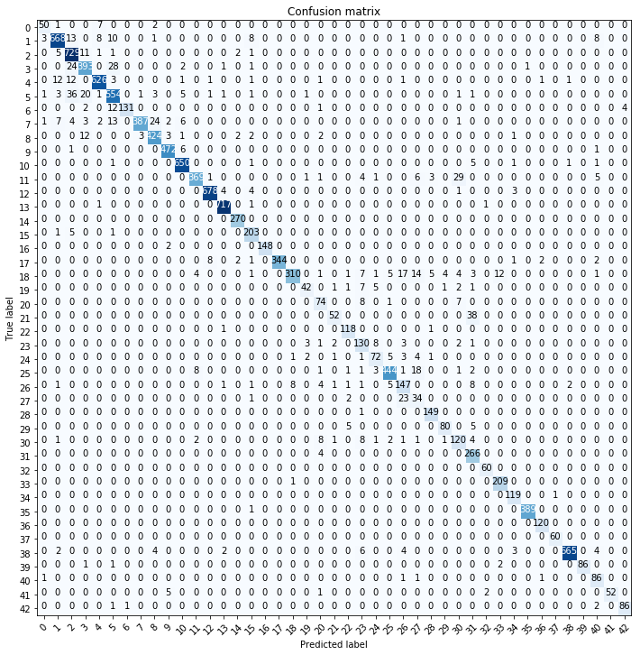
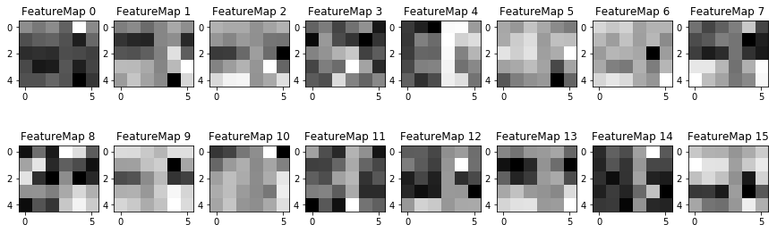

Build a Traffic Sign Recognition Project
The goals / steps of this project are the following: * Load the data set (see below for links to the project data set) * Explore, summarize and visualize the data set * Design, train and test a model architecture * Use the model to make predictions on new images * Analyze the softmax probabilities of the new images * Summarize the results with a written report
This is the writeup and this is the link to my project code
I used numpy to calculate summary statistics of the traffic signs data set:
Here is an exploratory visualization of the data set. It is a set of histograms showing how the data is distributed among the 43 classes. The first is an overlaid histogram showing the original and augmented training data, while the second and third are the validation and test data distributions.
Data Visualisation
As a first step, I decided to convert the images to grayscale because the Sermanet paper discusses the minimal effect of colour information on classification performance for this dataset. Instead of using YUV representation and focusing on the Y channel, I found it more intuitive to use the grayscale representation.
I also noticed that many of the images showed poor lighting and contrast. To help the training, I applied adaptive histogram to each p As a last step, I normalised the image data to be between (0,1). I had first chosen (-1,1) as the normalisation bounds but the classifier showed improved validation accuracy with (0,1). The performance increased from around 94% to 96.5%. This may have to do with the fact that I use ReLU as the activation function for all convolution layers but reason this is not convincing enough for me to accept as an answer.
I decided to generate additional data because the training data is highly unbalanced. In a real-world setting, I would have made sure that all classes have almost the same number of examples for training. However, comparing the validation and test histograms, it is clear that the same unbalanced trend is present in both of these data as well. Since the assignment is to show classification performance on this dataset primarily, I chose an approach where I augmented all classes which have examples less than ~2.5% of the total training examples.
The augmentation consisted of creating 4 extra images per training image in these classes. The image augmentation was done on the RGB images as follows: - Translation by [-2,2] pixels randomly. - Rotation by [-15,15] degrees randomly. - Scaling by [0.9, 1.1] randomly. - Brightness perturbation by up to 30% randomly.
All values were taken from the Sermanet paper, except for brightness, which was empirically chosen with visualisation and trial-error. The histogram shows that the augmented training data is more balanced than the original. However, this is still not a good dataset if one was using this classifier in the real-world. For the purpose of this assignment, it is good enough to train on.
Here is an example of a set of 10 random images before and after complete pre-processing and augmentation. A total of 36476 additional images were generated.
Original Images
Preprocessed Images
My final model consisted of the following layers:
| Layer | Description |
|---|---|
| Input | 32x32x1 grayscale image |
| Convolution 5x5 | 1x1 stride, valid padding, outputs 28x28x6 |
| ReLU | |
| Max pooling | 2x2 stride, outputs 14x14x6 |
| Convolution 5x5 | 1x1 stride, valid padding, outputs 10x10x16 |
| ReLU | |
| Max pooling | 2x2 stride, outputs 5x5x16 |
| Convolution 5x5 | 1x1 stride, valid padding, outputs 1x1x400 |
| ReLU | |
| Flatten | inputs 5x5x16 and 1x1x400, outputs 800 |
| Dropout | keep_prob = 0.6 |
| Fully connected | inputs 800, outputs 43 |
To train the model, I used a modified LeNet architecture called MultiNet, where the outputs from the second and third convolution layers are flattened and given to the fully connected layer, in a multi-level feature extraction. This is the recommended approach in the Sermanet paper. I also used dropout of 60% to regularise the network while training. I did not use any non-linear activation function at the output layer since I found the performance satisfactory with this architecture. The weights were initialised with mu=0 and sigma=0.01. I found that a smaller value for sigma gave much better performance compared with the default 0.1 for LeNet and did not get stuck at minima at start of training.
The batch size was kept at 128 default since using other values (100) did not affect performance drastically. I used the Adam optimiser and the learning rate was kept at 0.001 after extensive testing with different rates (from 0.01 to 0.0001, including a rate schedule). I have noticed a pattern in training this network. If the training is going well, the validation accuracy will climb steadily to 90% within the first 10 epochs and then reach above 93% after about 15 epochs. However, if the training is stuck in a minima from the start, it will remain around 85% and will not be able to recover after that, even if I increase the epochs to 50. So, in the future, I want to implement a scheme which monitors this behaviour and either restarts the training or increases the learning rate to perturb it and allow it to jump out of the local minimum it is stuck in.
I first started with the original Udacity data set and the LeNet architecture without modifying the optimiser or training parameters. I normalised the images but used RGB and no contrast modification nor data augmentation. LeNet reached a validation accuracy of ~92% and a test accuracy of ~89%. After this point, no matter what parameters I changed, the performance did not improve. I expected this since LeNet was originally designed for handwriting recognition and the traffic sign recognition problem is slightly more complex. So I decided to preprocess the data in a more structured way and also augment the unbalanced classes.
Since I was making a larger data set, I also decided to use the approach in the Sermanet paper by creating a multi-level convolutional network based on LeNet. I kept the basic architecture the same and allowed layer skipping for the second and third conv layers. I experimented with different augmentation methods, including perspective warping, but finally settled on the three described in the paper, along with brightness perturbation. I believe brightness to be important because many of the traffic signs were in glare or in badly illuminated conditions, and I wanted the network to be invariant to using lighting as a feature because it is very noisy and not dependable across the entire data set.
My final MultiNet model results were: * training set accuracy of 99.7% * validation set accuracy of 96.5% * test set accuracy of 93.3%
Based on these numbers, I feel that the network has over-fitted the training data, since the performance drops some over the validation set and even more over the much larger test set. Given time, I would make a more balanced training set and possibly increase the dropout to 50% to force slightly more regularisation, given more time.
Here are five German traffic signs that I found on the web:
Test Images
All of these belong to the classes present in the training data so I expect the network to recognise at least 4 out of 5, given the test accuracy of above 90%.
Here are the results of the prediction:
| Image | Prediction |
|---|---|
| Left Turn Ahead | Left Turn Ahead |
| Priority Road | Priority Road |
| Right of Way | Right of Way |
| Road Work | Road Work |
| 70 km/h | 70 km/h |
The model was able to correctly guess 5 of the 5 traffic signs, which gives an accuracy of 100%. This compares favorably to the accuracy on the test set of 93.3%, since this is a very small sample and this performance was expected.
For all images, the model is very confident of the class of the sign. The top five soft max probabilities were
Top 5 Softmax
| Probability | Prediction |
|---|---|
| 0.99 | Left Turn Ahead |
| 0.99 | Priority Road |
| 0.99 | Right of Way |
| 0.99 | Road Work |
| 0.98 | 70 km/h |
The slight drop in confidence for 70 km/h is interesting because the next category predicted is No Vehicles. If I look at the No Vehicles sign, it is just like a speed limit sign, except there is no text inside the red circle. So the network has given the closest next possible match, based on learned features. It is also interesting that it did not output the other classes of speed limit signs as second choice. This is a good thing for me because it may point to the fact that the network has learnt to distinguish the numbers inside each sign as well as the surrounding visual features.
The confusion matrix for the test data is shown below
.
By studying it, we can see that it is primarily diagonal, which means that the network has classified almost all classes correctly with few misclassifications. By looking for large off-diagonal elements, we can see that classes (11,18,21) have the most mis-classifications. For example, 11 (Right of Way) is often mistaken for 30(Beware of Ice/Snow). The sign for 30 has a snowflake in the middle of it. For low-resolution images, I can understand how the right-of-way symbol might look like a snow-flake. So this mis-classification is visually understandable, given the low quality images of the German data set. We can find similar reasoning for the other mis-classifications. For the five images, I was lucky, in a way, since the image I randomly chose had good contrast and good enough resolution for the network to pick up the road work symbol clearly.
I implemented the visualisation for the first and second convolutional layers of the MultiNet, based on the template code given in the last cell of the notebook. The full set of feature maps for all five test images is printed in the last cell of the notebook. However, I was disappointed because I cannot make out any obvious features that it has learnt. Maybe it is the way I am plotting the results with imshow(). I will address this again in the future but given the overdue deadline, I will not invest more time on this at this point.
.